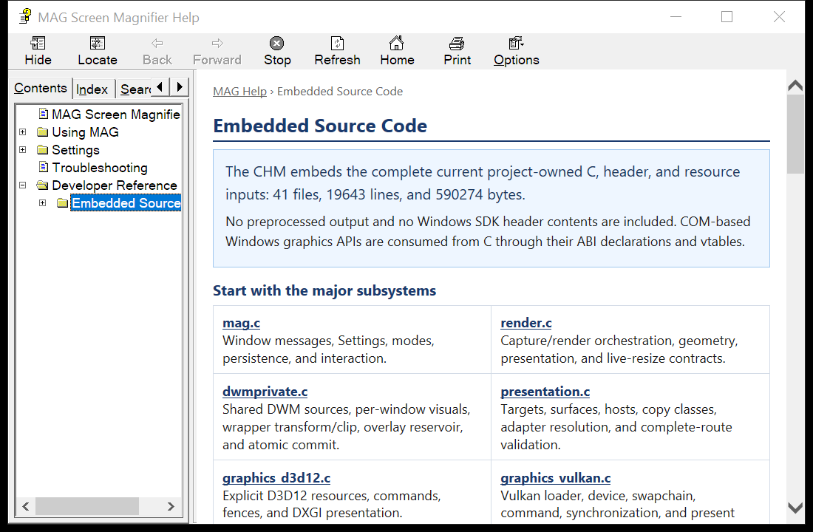

The CHM embeds the complete current project-owned C, header, and resource inputs: 45 files, 28110 lines, and 849099 bytes.
No preprocessed output and no Windows SDK header contents are included. COM-based Windows graphics APIs are consumed from C through their ABI declarations and vtables.

The embedded source browser in the compiled MAG Help viewer. Expand Developer Reference to open any current project compilation input.
| mag.c Window messages, Settings, modes, persistence, and interaction. | render.c Capture/render orchestration, geometry, presentation, and live-resize contracts. |
| dwmprivate.c Shared DWM sources, per-window visuals, wrapper transform/clip, overlay reservoir, and atomic commit. | presentation.c Targets, surfaces, hosts, copy classes, adapter resolution, and complete-route validation. |
| graphics_d3d12.c Explicit D3D12 resources, commands, fences, and DXGI presentation. | graphics_vulkan.c Vulkan loader, device, swapchain, command, synchronization, and present path. |
| File | Lines | Responsibility |
|---|---|---|
| d2dwriteabi.h | 293 | C ABI declarations for the Direct2D/DirectWrite interfaces used by MAG. |
| d3dkmtx.c | 362 | Project-owned C implementation. |
| d3dkmtx.h | 62 | Project-owned C declarations, types, constants, and ABI surface. |
| dcompabi.h | 191 | C ABI declarations for the DirectComposition interfaces used by MAG. |
| dwmapix.c | 22 | Project-owned C implementation. |
| dwmapix.h | 15 | Project-owned C declarations, types, constants, and ABI surface. |
| dwmprivate.c | 1818 | Private DWM shared desktop/window visuals, retained DirectComposition tree, transform/clip, overlay reservoir, and atomic updates. |
| dwmprivate.h | 86 | Project-owned C declarations, types, constants, and ABI surface. |
| framework.h | 30 | Project-owned C declarations, types, constants, and ABI surface. |
| gdiplusabi.h | 112 | Project-owned C declarations, types, constants, and ABI surface. |
| graphics.c | 349 | Graphics backend catalog and shared backend dispatch. |
| graphics.h | 201 | Project-owned C declarations, types, constants, and ABI surface. |
| graphics_d3d11.c | 768 | Direct3D 11/DXGI renderer and presentation backend. |
| graphics_d3d12.c | 977 | Direct3D 12 command, resource, fence, and DXGI presentation backend. |
| graphics_d3d9.c | 596 | Direct3D 9 renderer and presentation backend. |
| graphics_dcomp.c | 294 | DirectComposition presentation host. |
| graphics_dcomp.h | 30 | Project-owned C declarations, types, constants, and ABI surface. |
| graphics_gdi.c | 482 | GDI DIB/HDC renderer and CPU frame path. |
| graphics_gdiplus.c | 605 | Project-owned C implementation. |
| graphics_layered.c | 209 | Traditional User32 layered-window presenter and capacity reservoir. |
| graphics_layered.h | 28 | Project-owned C declarations, types, constants, and ABI surface. |
| graphics_opengl.c | 546 | WGL/OpenGL context, texture, overlay/text, and SwapBuffers path. |
| graphics_presentation_manager.c | 787 | Windows 11 Presentation Manager host and surface lifecycle. |
| graphics_presentation_manager.h | 54 | Project-owned C declarations, types, constants, and ABI surface. |
| graphics_vulkan.c | 1289 | Vulkan loader/device/swapchain, resource, command, synchronization, and present path. |
| help.c | 42 | Project-owned C implementation. |
| help.h | 7 | Project-owned C declarations, types, constants, and ABI surface. |
| mag.c | 6283 | MAG window procedure, message crackers, modes, Settings dialog, persistence, and window behavior. |
| mag.h | 15 | Project-owned C declarations, types, constants, and ABI surface. |
| main.c | 736 | Process startup, DPI awareness, window class registration, message loop, and command-line entry. |
| presentation.c | 1355 | Presentation models, surface/host/copy/adapter resolution, validation, and status reporting. |
| presentation.h | 354 | Project-owned C declarations, types, constants, and ABI surface. |
| presentation_observer.c | 1612 | Process-scoped DxgKrnl/Win32k ETW presentation observation, exact mode classification, and provider diagnostics. |
| presentation_observer.h | 38 | Presentation observer lifecycle, status, and exact observed-mode callback contract. |
| render.c | 5650 | Capture orchestration, source/view geometry, rendering lifecycle, presentation, resize/move contracts, and verification. |
| render.h | 236 | Project-owned C declarations, types, constants, and ABI surface. |
| resource.h | 80 | Project-owned C declarations, types, constants, and ABI surface. |
| Resource.rc | 166 | Dialogs, icons, strings, embedded CHM, and native resources. |
| targetver.h | 7 | Project-owned C declarations, types, constants, and ABI surface. |
| ui_renderer.c | 736 | Backend-neutral UI draw list, Direct2D UI, text selection, and overlay resources. |
| ui_renderer.h | 36 | Project-owned C declarations, types, constants, and ABI surface. |
| wingdix.c | 198 | Extended Win32/GDI helpers and message-cracker support implementation. |
| wingdix.h | 185 | Project-owned C declarations, types, constants, and ABI surface. |
| winuserx.c | 141 | Extended User32/resource helpers. |
| winuserx.h | 27 | Project-owned C declarations, types, constants, and ABI surface. |